Садовая скульптура.

Сад – это больше чем простое собрание растений. Орнаментальное украшение сада производит впечатление не только в грандиозных по своим размерам парках. В небольших садах вы также успешно сможете использовать различные элементы украшения.
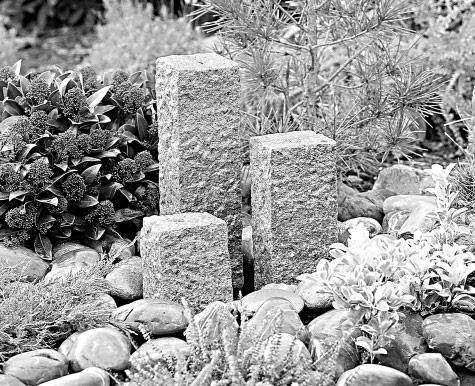
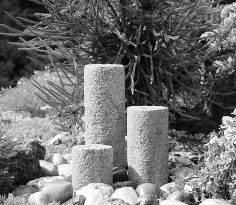
Решающим условием успешного оформления и создания уюта в саду считают соответствие элементов оформления стилю сада и дома. Чем меньше зеленый участок, тем важнее выдерживать определенный стиль при оформлении и выборе отдельных декоративных элементов. При помощи отдельных тщательно выбранных оформительско-художественных средств можно создать на базе собственного земельного участка единое целое, гармонически увязанное в отдельных местах.
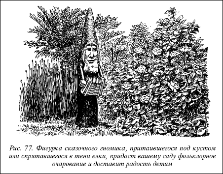
Рис. 77. Фигурка сказочного гномика, притаившегося под кустом или спрятавшегося в тени елки, придаст вашему саду фольклорное очарование и доставит радость детям
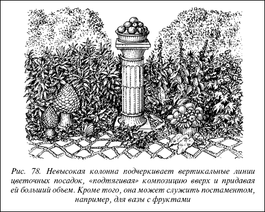
Рис. 78. Невысокая колонна подчеркивает вертикальные линии цветочных посадок, «подтягивая» композицию вверх и придавая ей больший объем. Кроме того, она может служить постаментом, например, для вазы с фруктами
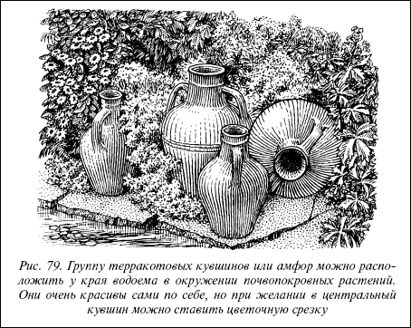
Рис. 79. Группу терракотовых кувшинов или амфор можно расположить у края водоема в окружении почвопокровных растений. Они очень красивы сами по себе, но при желании в центральный кувшин можно ставить цветочную срезку
Статуи античных богов и львов выглядят в сельских садах неуместными, и, наоборот, простые классические формы и современные садовые скульптуры хорошо смотрятся в небольших садиках.
Декоративные элементы оформления создают такой важный для гармоничной композиции центр внимания. Небольшое суженное и тесное пространство сада в результате акцента внимания на декоративный объект оптически увеличивается, создается иллюзия изменения пространства.
Это интересно
Еще в античные времена амфоры и скульптуры в садах использовались с чисто эстетической оформительской целью в качестве украшения пространства.
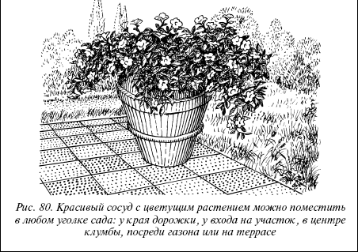
Рис. 80. Красивый сосуд с цветущим растением можно поместить в любом уголке сада: у края дорожки, у входа на участок, в центре клумбы, посреди газона или на террасе
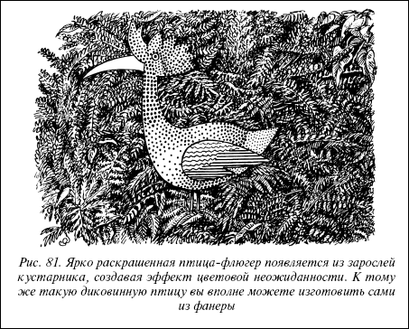
Рис. 81. Ярко раскрашенная птица-флюгер появляется из зарослей кустарника, создавая эффект цветовой неожиданности. К тому же такую диковинную птицу вы вполне можете изготовить сами из фанеры
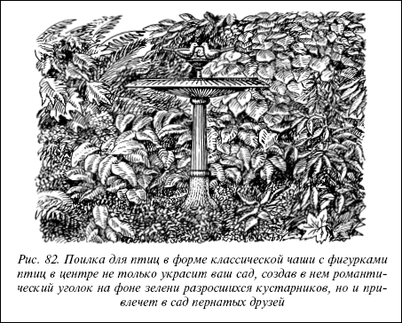
Рис. 82. Поилка для птиц в форме классической чаши с фигурками птиц в центре не только украсит ваш сад, создав в нем романтический уголок на фоне зелени разросшихся кустарников, но и привлечет в сад пернатых друзей
Декоративные предметы, используемые в качестве центра внимания, ориентируют зрительную работу на конкретное восприятие красивого, акцентируют отдельные уголки сада, оживляют монотонные посадки и малопривлекательные участки, а также вовлекают новые элементы в общую зрительную картину сада.
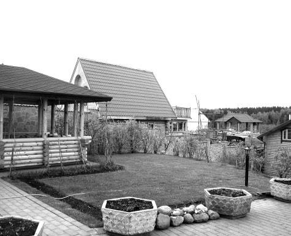
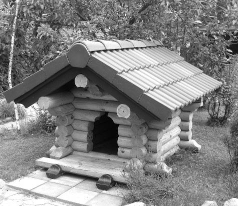
Садовая скульптура относится к важнейшим декоративным элементам оформления пространства сада. Садовая скульптура имеет бесчисленное множество форм: от искусно обработанной коряги необычной формы до флюгеров, фигурок и даже забавных огородных чучел. Здесь открывается безграничный простор для вашей фантазии и пристрастий. На способы оформления участка садовой скульптурой распространяются общие законы соответствия стилей и создания гармонии, принятые для всех форм декоративного устройства пространства.
Совет
Можно применять бесчисленные варианты оформления пространства садовой скульптурой и другими декоративными элементами, используя их в качестве центра внимания. Это сделает небольшие садики интересными и разнообразными, а в больших садах привяжет взгляда к конкретным предметам. Важно, чтобы декоративные элементы гармонировали с растениями, которые образуют обрамление и задний план.
Большие скульптуры могут прерывать строгие горизонтальные линии, например, кустов и как бы разбивать их.
Малые объекты садовой скульптуры перемещают конкретные части сада в поле зрения. Попарно расположенные, они могут использоваться в качестве обрамления дорожек, лестниц и входов, придавая им особенно выразительный стиль.
Светлые объекты сообщают игру света и тени в затемненных зонах сада, там, где возможности оформления естественными способами ограничены из-за недостатка освещения.
Пестрые объекты оживляют монотонные зеленые заросли кустарников или помогают цветовому оформлению сада во время цветения растений.
Высокие изящные предметы садовой скульптуры типа колонны подчеркивают вертикальные линии, например, на плоских грядках и клумбах, газонах и лужайках, «подтягивая» перспективу вверх. Декоративные элементы могут использоваться на различных местах в садах для привлечения внимания. В сочетании с растительностью они привносят цвет и структуру в различные зоны сада.
Классические солнечные часы, оформленные соответствующим образом, будут прекрасным центром садовой композиции.
Прекрасным декоративным элементом оформления являются различные сосуды, в которые высаживают растения. Они не только сами по себе являются украшением, но и подчеркивают красоту растущих и цветущих в них растений. Если сосуды оформлены в высокохудожественном стиле, то растительность не должна быть доминирующей, чтобы не подавлять оформительское значение таких изделий.
Колонны и постаменты как бы приподнимают небольшие объекты над общим планом и тем самым вводят их в оформительский ансамбль.
Стеклянные шары на деревянных ножках– подставках добавляют игру света и цветовых солнечных эффектов в сад.
Даже красиво подобранные валуны и корчеванные коряги могут на соответствующих местах использоваться для украшения сада.
Не ограничивайте свою фантазию: самые неожиданные, отжившие свой век старые вещи и предметы могут стать украшением сада, придать ему своеобразную прелесть и подчеркнуть индивидуальность владельца.
Принципиально важно, как уже говорилось, чтобы объекты садовой скульптуры стилистически соответствовали дому и саду. Однако не менее важное значение имеет место его размещения в саду. Для того, чтобы украшение вписалось в окружающую обстановку, превратилось в органичную часть сада, необходимо учитывать его соответствие и сочетаемость с другими объектами и растениями на участке. Садовую скульптуру можно разместить в одиночестве посреди газона или лужайки, у пруда, чтобы ее очертания повторялись в отражении на водной глади, на фоне вечнозеленой живой изгороди и т. д. Можно, напротив, создавать композиции из различных предметов садовой скульптуры на открытом пространстве сада или в укромном его уголке. Однако, размещая их, старайтесь, чтобы 1 или 2 предмета попадали в поле зрения одновременно, иначе создастся эффект перегруженности пространства.
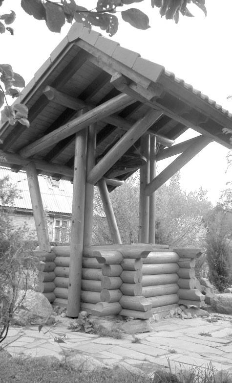